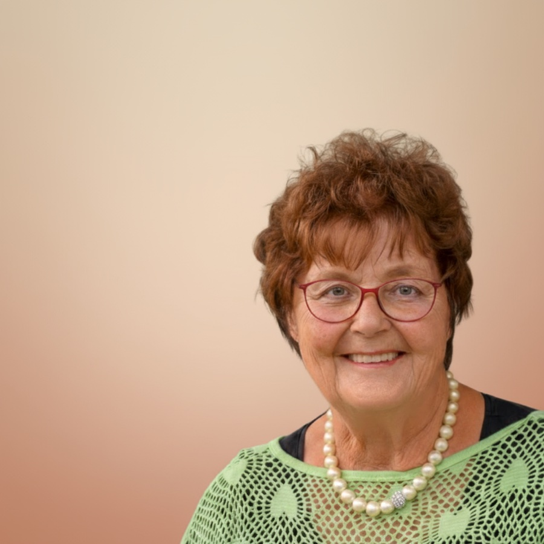

Über 45 Jahre Erfahrung in der Arbeit mit Menschen. Einfühlsam, klar und absolut vertraulich.

Ich war rund 45 Jahre mit Freude als Grund- und Hauptschullehrerin tätig. Anschließend unterrichtete ich viele Jahre Deutsch als Fremdsprache und begleitete Erwachsene mit sehr unterschiedlichen Lebenswegen.
Ergänzend absolvierte ich einen Fernstudienlehrgang zur psychologischen Beraterin an der Paracelsus Schule in München. Danach arbeitete ich mehrere Jahre nebenberuflich in einer psychiatrischen Praxis in Trier.
Diese langjährige Erfahrung hat meinen Blick für Menschen geprägt. Ich arbeite einfühlsam und klar, vertraue auf die Entwicklungsmöglichkeiten jedes Einzelnen und suche gemeinsam mit Ihnen nach Lösungen, die im Alltag tragbar sind.
„Jede einzelne Person ist mir wichtig. Ich möchte Menschen dort abholen, wo sie gerade stehen – unter Berücksichtigung ihrer persönlichen Lebensgeschichte.“
Elske Joost
60 Minuten, in denen wir uns kennenlernen und Ihr Anliegen besprechen. Danach entscheiden Sie in Ruhe, ob die Beratung für Sie passt.
Kostenloses Erstgespräch vereinbarenOder rufen Sie mich an: 0174 2152695